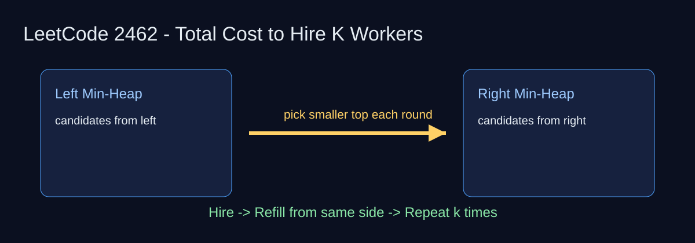

LeetCode 2462: Total Cost to Hire K Workers (Two Heaps / Greedy)
LeetCode 2462HeapGreedySource: https://leetcode.com/problems/total-cost-to-hire-k-workers/

English
Keep two candidate windows, left and right. Put each side in a min-heap. Each round, hire the cheaper top (tie by smaller index), then refill from that same side.
Complexity
Time: O((k + candidates) log candidates), Space: O(candidates).
Reference Implementations (Java / Go / C++ / Python / JavaScript)
class Solution { public long totalCost(int[] costs, int k, int candidates) { int l = 0, r = costs.length - 1; PriorityQueue<int[]> L = new PriorityQueue<>((a,b) -> a[0] != b[0] ? a[0]-b[0] : a[1]-b[1]); PriorityQueue<int[]> R = new PriorityQueue<>((a,b) -> a[0] != b[0] ? a[0]-b[0] : a[1]-b[1]); for (int i=0;i<candidates&&l<=r;i++) L.offer(new int[]{costs[l], l++}); for (int i=0;i<candidates&&l<=r;i++) R.offer(new int[]{costs[r], r--}); long ans=0; for (int i=0;i<k;i++) { if (R.isEmpty() || (!L.isEmpty() && L.peek()[0] <= R.peek()[0])) { ans += L.poll()[0]; if (l<=r) L.offer(new int[]{costs[l], l++}); } else { ans += R.poll()[0]; if (l<=r) R.offer(new int[]{costs[r], r--}); } } return ans; } }// Same logic: two min-heaps, pick cheaper top each round, refill same side.// Same logic implementation in C++ with priority_queue<pair<int,int>>.# Same logic in Python with heapq on (cost, index).// Same logic in JavaScript with custom MinHeap.中文
维护左右两个候选区间，各自放入最小堆。每轮取更便宜的堆顶（费用相同按下标更小），然后从同一侧继续补充候选人。
复杂度
时间复杂度 O((k + candidates) log candidates)，空间复杂度 O(candidates)。
多语言参考实现（Java / Go / C++ / Python / JavaScript）
class Solution { public long totalCost(int[] costs, int k, int candidates) { int l = 0, r = costs.length - 1; PriorityQueue<int[]> L = new PriorityQueue<>((a,b) -> a[0] != b[0] ? a[0]-b[0] : a[1]-b[1]); PriorityQueue<int[]> R = new PriorityQueue<>((a,b) -> a[0] != b[0] ? a[0]-b[0] : a[1]-b[1]); for (int i=0;i<candidates&&l<=r;i++) L.offer(new int[]{costs[l], l++}); for (int i=0;i<candidates&&l<=r;i++) R.offer(new int[]{costs[r], r--}); long ans=0; for (int i=0;i<k;i++) { if (R.isEmpty() || (!L.isEmpty() && L.peek()[0] <= R.peek()[0])) { ans += L.poll()[0]; if (l<=r) L.offer(new int[]{costs[l], l++}); } else { ans += R.poll()[0]; if (l<=r) R.offer(new int[]{costs[r], r--}); } } return ans; } }// Go: 两个最小堆，逐轮取更小值并从对应方向补人。// C++: 两个最小堆，逐轮比较堆顶。# Python: heapq 维护左右候选池。// JS: 自定义最小堆实现同样策略。
Comments